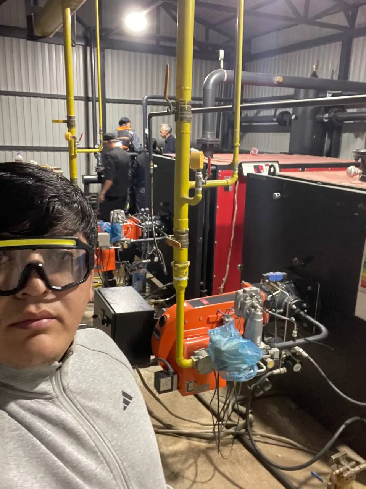
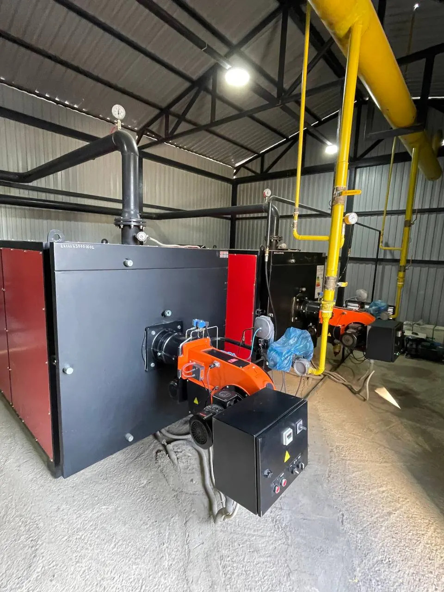
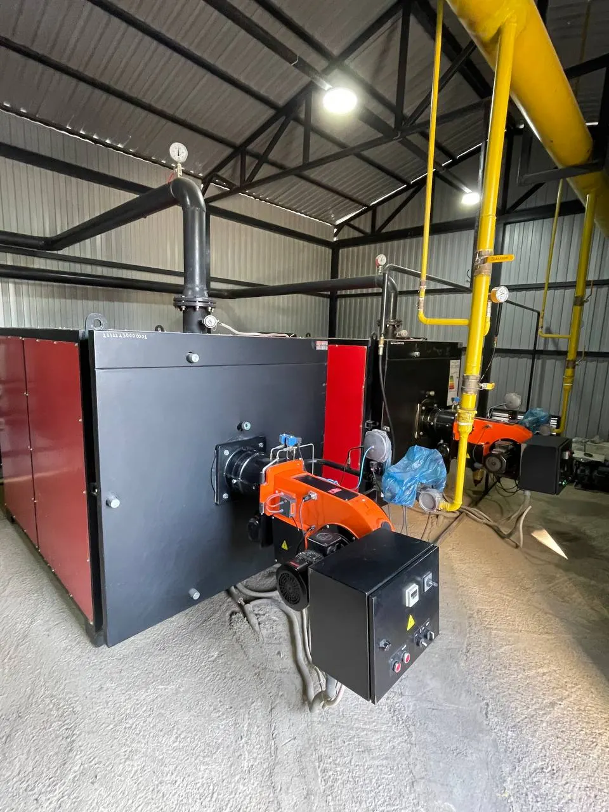
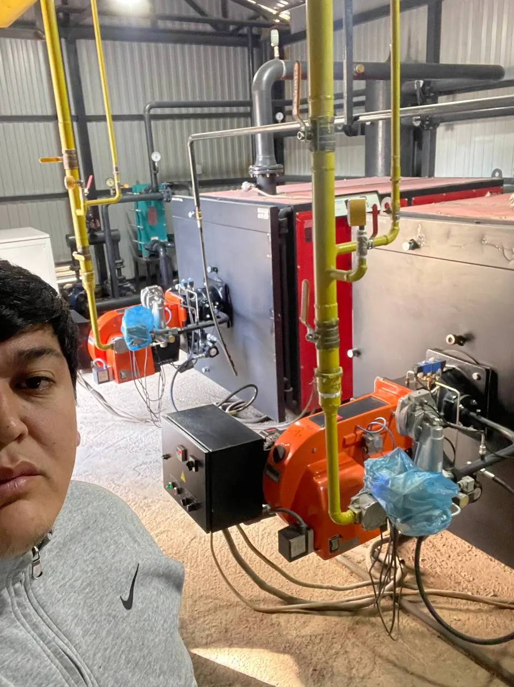
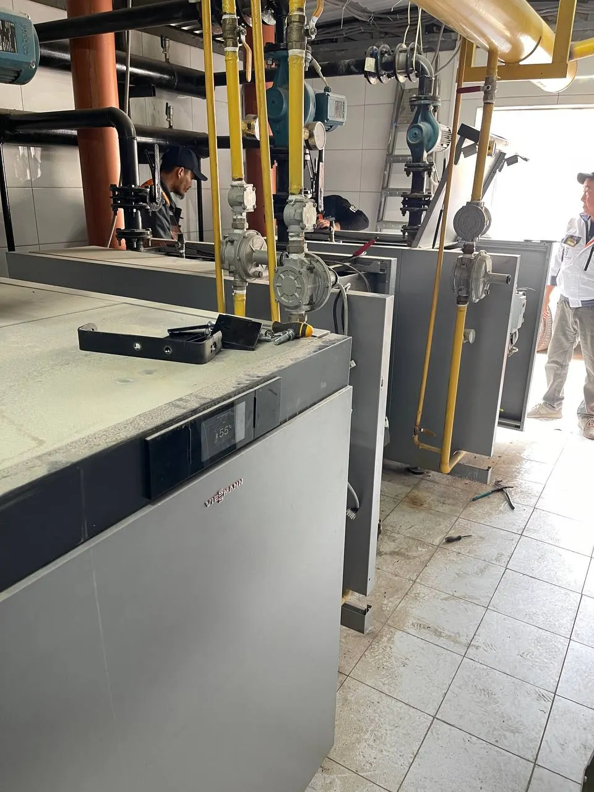

Пусконаладка горелок Baltur
Монтаж на котёл, проверка газовой рампы или топливной линии, настройка ступеней и модуляции, замеры дымовых газов, акт и протокол.
Подробнее →Пусконаладка, обслуживание, ремонт и настройка газовых, дизельных и комбинированных горелок Baltur. Инженер с газоанализатором приезжает на объект в течение 2 часов.
Горелка — самый нагруженный узел котельной. Нагар на головке, изношенная форсунка или сбитое соотношение газа и воздуха дают перерасход топлива, сажу в топке и внезапные остановки в мороз.
Baltur в руководствах по эксплуатации требует, чтобы пуск, проверку и обслуживание выполняли только квалифицированные специалисты с оригинальными запасными частями. Именно этим мы и занимаемся.
От первого пуска до модернизации котельной — одна команда, которая знает оборудование Baltur.
Монтаж на котёл, проверка газовой рампы или топливной линии, настройка ступеней и модуляции, замеры дымовых газов, акт и протокол.
Подробнее →Чистка головки сгорания, электродов, фотоэлемента и фильтров, замена форсунок, проверка клапанов, герметичности и автоматики.
Подробнее →Выезд при остановке котельной: поиск причины блокировки, ремонт автоматики, двигателя, насоса, сервопривода.
Подробнее →Подбор соотношения топливо–воздух по замерам O₂, CO и CO₂. В результате — устойчивое пламя и расход топлива без перерасхода.
Подробнее →Склад расходников и узлов в Ташкенте: электроды, форсунки, фотоэлементы, фильтры, блоки управления, сервоприводы.
Подробнее →Замена устаревшей горелки на актуальную серию Baltur, перевод котельной с дизеля или мазута на природный газ.
Подробнее →Обслуживаем горелки Baltur от бытовых моделей серии BTG до промышленных двухблочных горелок серий TBR и IB.
Опишите проблему и назовите модель с шильдика горелки.
Аварийный — до 2 часов по Ташкенту, плановый — в согласованный день.
Осмотр, проверка автоматики и замеры дымовых газов.
Чистка, замена деталей, настройка. Стоимость согласуем до начала работ.
Акт, результаты замеров и рекомендации по следующему ТО.
Фотографии с реальных выездов: котельные частных домов, коммерческих зданий и производств.





Для котельных, которые не могут останавливаться, заключаем годовой договор. Вы знаете дату каждого визита, а при аварии ваш вызов обслуживается вне очереди.
Не нашли ответ — позвоните, инженер ответит по телефону.
Газовую горелку — не реже одного раза в год, перед отопительным сезоном. Дизельную и комбинированную — дважды в год: жидкое топливо быстрее загрязняет форсунку, фильтр и головку. Для котельных, работающих круглый год, график составляем по наработке часов.
Чаще всего причина — нет сигнала пламени: загрязнён фотоэлемент или ионизационный электрод, нарушен зазор электродов розжига, упало давление газа, засорён фильтр. Сбрасывать блокировку раз за разом нельзя — горелку нужно диагностировать. Позвоните, по коду или поведению горелки инженер часто подсказывает причину уже по телефону.
Стоимость зависит от модели и мощности горелки, вида топлива и объёма работ. Цены — по запросу: назовите модель с шильдика по телефону +998 98 210 03 03, и мы сразу озвучим стоимость.
По Ташкенту при аварийной остановке — в течение 2 часов с момента звонка. Плановые работы назначаем на удобный день.
Нет. Мы специализируемся только на горелках Baltur — поэтому знаем конструкцию серий, держим запчасти и настраиваем оборудование по регламентам производителя.
Да. На выполненные работы — 12 месяцев, на установленные нами запчасти — 6 месяцев. Условия фиксируются в акте выполненных работ.
Позвоните — инженер ответит сразу, уточнит модель и назовёт время выезда.
+998 98 210 03 03